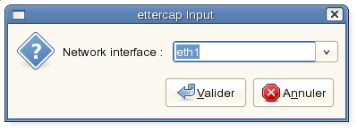
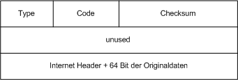
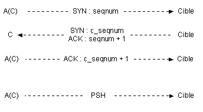

Let’s continue our small review of network attacks, by checking this time some typical attacks on the network layer. There are the most known examples of what can be done.
ARP cache poisoning
ARP works basically on broadcast :
- when a machine connects to the network, it broadcasts its MAC address to the LAN (ethernet broadcast)
- when a machine needs to find a recipient (for a given IP), it sends a request using broadcast.
When this learning process is over, the machine keeps the information in its ARP cache, that to save the network resources. The cache is a simple correspondence table of MAC / IP addresses.
You can have a look to your ARP cache with :
$ arp -a
Beyond its convenience, the big problem with broadcasting is that it does not authentication at all.
So, you can easily see how easy it is to corrupt an ARP cache with some forged packet. As the MAC address the only way to route date on an ethernet LAN, the potential impact of this attack is huge !
For best efficiency, the attacker will flood the targets with faked ARP responses at an high rate. That way, it gives little chance to a valid ARP record to survive long, as it will get quickly overwritten in the cache.
Nowadays, there are many convenient tools to drive this attack, like Ettercap.
You can start it in graphic mode :
$ ettercap -G
Got to the “Sniff / United sniffing” menu and select your network interface :

“Hosts / scan for hosts” menu allow you to quickly visualize the machines of the LAN.
Then, in the “Mitm” (Man In The Middle) menu, choose “Arp cache poisonning” :
{kind=link}
{kind=link}
Finally, “start / start sniffing” (default is all machines are targeted) :
{kind=link}
Immediatly, Ettercap starts collecting data. Here some POP credentials can be read :
Several workaround can be set against this, though none is really satisfying :
- use static ARP entries for the LAN (arp -s 192.168.1.1 11-22-33-44-11-11) ; that is really not convenient, not scalable and unpractical for mobile devices ;
- some switches can detect MAC address changes and deactivate their port (look at switchport port-security on Cisco switches) ;
- there are some tools to be set on a probe ; arpwatch for Linux checks the LAN and send an alert by mail or to syslog in case of maliscious ARP events ;
- more generic IDS / IPS like Snort should also be able to detect this attack ;
- Radius / EAP hardware devices authentication is a more complex solution but the recommended one on large networks.
ICMP Attacks
ICMP is a protocol that is just over IP in the networking stack, aimed to diagnose links. A standard ping, for instance, is based on this protocol.
In some cases, it could be used to drive some attacks.
Ping of the Death
That’s the historical attack. An ICMP packet is encapsulated inside an IP datagram.
An ICMP datagram is structured as below :

A few ICMP requests types :
{kind=link}
0 = echo reply
8 = echo request
11 = TTL expired
12 = option error (wrong header)
The maximum size of an IP datagram is 65 535 octets, though each ethernet link has a maximum ethernet packet size that it can support. That is the MTU value (default is 1500 octets).
When a packet bigger than this size must be sent, it is fragmented in smaller sized packets which are sent one after another. They will be reassembled by the recipient in the right order.
For instance in the case of an ICMP echo request (ping), the ICMP header has a lenght of 8 octets and the IP header in which it is encapsulated is of 20 octets (without any additional option).
So :
65535 – 20 – 8 = 65507 octets are left available at most for the data field of the ICMP packet.
If an ICMP packet bigger than this size is built and sent, it will be send fragmented to the recipient.
When the recipient reassembles it, it gets an invalid IP datagram with a size bigger than 65 535 octets.
A sane IP stack would just drop it.
But in the past, that leaded to a buffer overflow DoS attack.
with many old IP stacks (Windows 95, NT, Linux 2.0, …), this caused some unexpected behaviour : networking crash, system freeze, reboot…
The IP stack had a buffer for 65 535 octets without exception catching in case of superior sized packet. That caused the memory to be written with the extra bits anywhere, with unpredictable effects.
Nowadays, all systems must be protected against this well known attack, but unfortunately the same kind of behaviour is regularly found in different protocols or applications.
If you try to practice this attack, you will see that ping prevents it :
$ ping -s 65508 192.168.1.1
Error: packet size 65508 is too large. Maximum is 65507
Sing is a nice tool to easily play with ICMP packets. No problem this time :
$ sing -s 65508 192.168.1.1
The capture below shows the packet fragmentation that results :
{kind=link}
How to protect from such issues ? Check regularly vulnerabilities issues and keep your system up to date.
Many administrators just block all the ICMP protocol on their firewall. It is a kind of overreaction : ICMP is in no way a danger, but is really useful when you need some diagnosis. If you also think that blocking it hides your network topology, you are wrong but that is another subject.
So update your systems, allow ICMP (and somehow prepare yourself for IPv6 :)).
ICMP Flood
Another very basic attack. It consists in sending as many and as big as possible ping requests at a high rate.
The goal is to saturate the target ressources : bandwith and responsiveness as the target network card has to process a lot of data.
On modern hardware, there are little chances that an isolated attack has any sensible impact.
Also, a well configured firewall or a good OS should discard high rated requests.
However, this still can be efficient on weak topologies and when it comes from multiples sources.
I am of course thinking about botnets, built with infected PC, that can scale from hundreds to thousands of machines.
Hping is a famous tool that allow to easily forge all kind of TCP, UDP and ICMP packets with their options.
It takes just one line to flood a taget :
$ hping3 --flood -1 192.168.1.1
Just to mention that you could have done it as well with Sing :
$ sing -T 0 192.168.1.1
Pong attack
This attack may lay to topology discovery.
As mentioned above, many administrator block ICMP from their firewall for security purpose. In general, the applied rule filters requests from the outside, but still responses from inside’s requests are allowed.
The trick here is to send a response on a target list of IP which are supposed to be find behind the firewall.
If it goes through the firewall, two cases are possible :
- the packet reaches the target, but this one destroys the packet as it was not waiting for anything. As a result, the attacker does not get any response.
- the packet never reaches its target, because there is no target (the machine is off or the IP is not allocated) ; in that case, the firewall should answer with an ICMP packet “host unreachable”.
By scanning an IP range, we are able that way to guess the network map that is behind the firewall.
If you just want to try it using ping, you will need something like tcpdump to see the “host unreachable response”.
For instance, on my network, there is not an IP such as 192.168.1.99 :
$ sing -reply 192.168.1.99
$ tcpdump icmp
tcpdump: WARNING: arptype 65534 not supported by libpcap - falling back to cooked socket
tcpdump: verbose output suppressed, use -v or -vv for full protocol decode
listening on tun0, link-type LINUX_SLL (Linux cooked), capture size 96 bytes
15:21:55.142086 IP 10.8.0.6 > 192.168.1.99: ICMP echo reply, id 58219, seq 0, length 16
15:21:58.192068 IP 10.8.0.1 > 10.8.0.6: ICMP host 192.168.1.99 unreachable, length 44
15:22:23.086762 IP 10.8.0.6 > star.int.jcbnet.org: ICMP echo reply, id 64619, seq 0, length 16
That’s confirmed.
Other uses of this attack can be imagined. Like firing up a flood attack targeting something behind the firewall.
It shows one of the limit of filtered based firewalling. A well configured IDS/IPS must be set up to detect all these well known ICMP attacks and block them.
IP spoofing
The goal of IP spoofing is to take advantage of the network accesses a target may be granted with.
Nowadays, the fact is that still many applications rely – sometimes uniquely – on the IP address as a source of authentication. Not only obsolete services (rsh, login, telnet), but some widely used like DNS or SMTP. Not to mention the firewalling rules.
Altering an IP packet with an IP address that is not yours is not a difficult thing. It just consists in using a raw socket not to use the system IP stack that would certainly discard such packets. Many tools can do it.
However, because the IP address is reused the higher layer – transport layer, the attacker has to consider the UDP and TCP protocol.
There is nothing much to do concerning UDP, as it is a non-connected protocol. The attacker will be free to send the requests he wants.
However, because the TCP protocol opens a session, the attacker will have much more work to do.
The big issue is that he will never receive the answers from the packets he sends – the real host will. Therefore, it is necessary to blindly guess what is going on, not to loose the session.
There are several methods :
- Initiating a new session and guessing the TCP sequence numbers :To be established, a TCP session follow a strict order : SYN, SYN-ACK and ACK. Each packet sent through TCP must be aknowledge. To differentiate the packets and send back that way an individual ACK, each packets has its own TCP sequence number. For every new packet, the sequence number is increased by the sender.
This illustrates better :

What the attacker has to do is sending the right ACK at the right moment, with not only the good TCP content but a proper TCP sequence number.
This technic is somehow historical, as nowadays modern systems generate a random TCP sequence number that is very hard to predict (even using flood). - Stealing an existing session :It requires the attacker to be somewhere on the ethernet link between the two targets. It becomes easier to generate proper sequence numbers by sniffing a legitimate conversation.
- Combining several LAN attacks :If the attacker is on the LAN, he can combine several attacks (ARP, DoS, SNAT) to sniff and block legitimate traffic and replay it.
{kind=link}
As this attack requires pretty much efforts, an alternative driving to the same effect is often used instead : DNS poisoning.
Otherwise, if the goal of IP spoofing is just DoS, the attacker don’t need to care about all that. This is unfortunately the most frequent use.
The goal is to hide a bit more the attacker and to make it difficult to build a proper defensive firewalling rule (what IP to use to block the aggressive packets ?).
All the attacker need to do is to send the forged packets without caring of responses at all.
A good protection starts by controlling the lower layer attacks (ARP, sniffing, …).
Then, firewalls should have a proper rule limiting the rate of SYN packets for any source, to prevent flood attacks trying to catch a valid TCP number.
Finally, always use up-to-date systems that have a strong randomization algorithm for TCP sequence numbers.
I would like to add that, as much as possible, weak authenticated application should be suppressed. Unfortunately, it won’t be an easy thing to work without DNS, SMTP and so on…
Conclusion
That’s it for this quick tour of network layer attacks. It shows how weak many protocols are and the power an attacker can get. Next time, we will quickly talk about transport layer attacks, as this article already started to cover it (TCP).